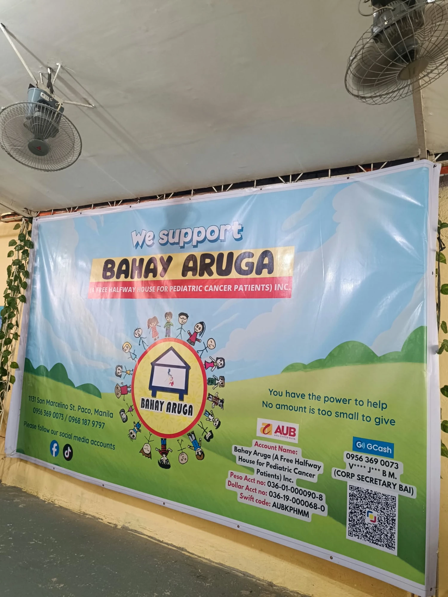
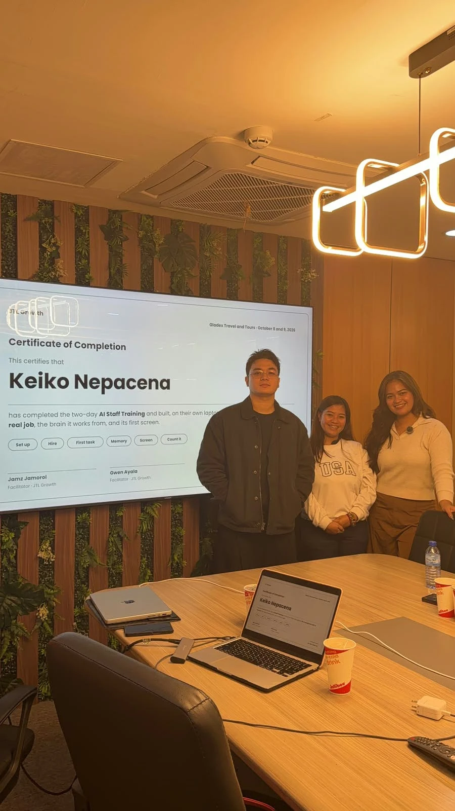

HR Strategy & Workforce Planning
Aligning org structure, headcount and talent plans with business goals alongside the CEO.
HR Head · People & Culture Leader
Building people. Strengthening culture. Driving organizational growth.
I lead the People and Culture function of a 250+ employee organization in Manila, owning the full employee lifecycle, from hiring and onboarding to engagement, company events, performance, rewards and labor compliance.
Quezon City, Philippines · 0945 872 4742

Currently
HR Head, People & Culture
Gladex Travel and Tours Corporation
About
I lead People and Culture as HR Head of Gladex Travel and Tours Corporation, with end-to-end ownership of recruitment, onboarding, employee relations, performance management, compensation and benefits, training and development, and Philippine labor-law compliance.
As strategic HR partner to the CEO and management team, I advise on workforce planning, organizational structure and talent development, and I build HR policies and systems from the ground up.
My foundation comes from global HR shared services at Accenture and Marsh McLennan (Mercer), followed by analyst and generalist roles covering employee records, employee relations, pre-payroll, policy drafting and training design. I'm known for accurate, confidential handling of employee data and strong partnership with management.
B.S. Psychology, Rizal Technological University.
Core competencies
Aligning org structure, headcount and talent plans with business goals alongside the CEO.
Programs, Town Halls and celebrations that build morale, belonging and a culture people want to stay in.
Onboarding that helps new hires integrate fast, connect with their teams and start strong.
Concept-to-execution events, from team building to year-end parties for employees and B2B partners.
End-to-end sourcing, pre-qualifying and hiring, now supported by an AI-powered careers site.
Fair, consistent handling of concerns, plus the full goal-setting, appraisal and career-development cycle.
Rewards and pre-payroll, HR policies and handbook provisions in line with DOLE and BIR requirements.
Accurate, confidential records and HR systems I've built, with AI tools that speed up documentation and planning.
Featured projects
Beyond running People & Culture, I build the tools my team uses, from hiring to payroll.
Built in-house at Gladex Travel and Tours to replace manual spreadsheets with one system for attendance, scheduling, requests, approvals and payroll compliance.
A public careers portal I built so candidates can find roles, ask an AI assistant about them and apply in minutes, with every application landing straight with the recruitment team.
Employee engagement & corporate events
Beyond recruitment and administration, I design and lead the programs that connect people to each other and to the business, from a new hire's first day to the company's biggest celebrations.
Onboarding and engagement initiatives that help new hires integrate quickly, build workplace connections and start with a positive employee experience.
Company-wide team-building activities designed to strengthen teamwork, communication, leadership and cross-functional collaboration.
Monthly company Town Hall meetings and employee activities that keep everyone informed, recognized and aligned with company direction.
The company's annual celebration, conceptualized and led end to end as a moment of appreciation for employees.
A year-end celebration for the company's business partners, extending the culture of appreciation to external relationships.
How I approach events
Corporate engagement & employee experience
A company trip that gave employees the chance to strengthen relationships, experience a new city together and create shared memories beyond the workplace. An external content creator joined to capture the experience and showcase the company's people-centered culture.

07Corporate social responsibility & community engagement
An outreach program supporting pediatric cancer patients at Bahay Aruga, a free halfway house for children with cancer, extending the company's culture of care beyond the workplace.
What these programs build
Experience
Gladex Travel and Tours Corporation · Manila
Medley Philippines Inc.
Best Options Incorporated
Marsh McLennan (Mercer)
Accenture Inc.
ABBA Personnel Services Inc.
Starbucks Philippines Inc.
Credentials
Bachelor of Science in Psychology
Rizal Technological University · 2020
AI Staff Training: Certificate of Completion New
JTL Growth · October 2026 · Credential ID JTL-GLX-2610-03
Two-day hands-on program. Built an AI employee with a real job on her own laptop, along with its memory and its first screen.

Basic Occupational Safety & Health Training for Safety Officer 2
2026
Occupational Safety: First Aider
Philippine Red Cross · 2024
Occupational First Aid and BLS CPR/AED Training
OFAT · 2024
Accenture · 2023
I pair human-centered leadership with AI-assisted tools for faster documentation, structured planning and continuous process improvement.
Let's connect
Open to conversations about HR leadership roles, people strategy and building great workplaces.